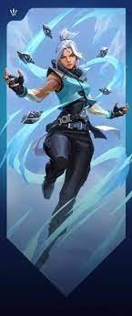
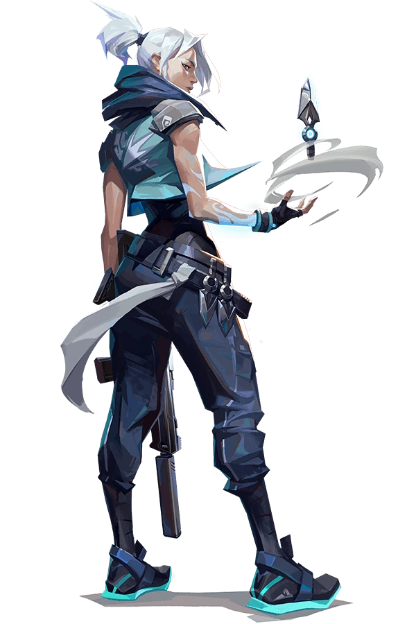

Viper is a brilliant scientist coming from the United States. She is the second member of the VALORANT PROTOCOL, joining along with Brimstone[1], and is the second-in-command of the PROTOCOL[2]. While once a brilliant scientist, she no longer thinks clearly, having become hateful and biased in her tests. Her personality reflects this through the passive-aggressiveness present in all her interactions and the resentment she feels towards others. Almost every Agent, at some point or the other, comments on her hate-driven mind. Despite this she is able to express appreciation, being willing to congratulate those who have impressed her.
Viper's abilities are based on self-made concoctions, comprising of toxicants which cause rapid respiratory damage when inhaled. These chemicals, which she manufactures herself, can be released into the air through specialized emitters to create small 'clouds' of the toxic gas. The smoke will eventually dissipate in air if left for long enough, and so the emitter must constantly remain active to retain the smoke's integrity. When referring to her abilities, Viper refers to the poisonous chemicals as 'Toxins'. This would technically be a misnomer, as the term 'Toxin' refers to harmful biological compounds that can be found in nature, and are produced by living organisms. For artificially manufactured products with similar properties, the term 'Toxicant' is to be used.
Raze has a personality reflecting her explosive and colorful playstyle, bringing happiness and positivity to the team. She often cracks bad jokes and lifts the team's spirit, all while obliterating the enemy with her kit. The rest of the team can find Raze annoying, however the way she lightens the atmosphere does not go unnoticed. Raze also loves to party and is always incorporating music and festival at any chance she can get.
All while lifting her team's spirits, Raze deals heavy damage with her dangerous self-made kit. She uses her Paint Shells to send scatter grenades, flushing out and potentially eliminating enemies. Raze also uses Blast Pack to fly through the air, or set as a trap, and her signature Showstopper rocket launcher deals heavy damage, potentially killing enemies instantly. Raze's Boom Bot, also referred to as 'Bomb Buddy', is a cute homing device which explodes when near enemies. Raze creates all her gear, however borrows inspiration, and parts, from her friendly rival Killjoy.
Killjoy is the 4th Agent to join the PROTOCOL. She is a young tech user and a genius, who uses various gadgets and bots of her own invention in combat. She is of German origin, (however, only one of her parents being of German ancestry[1]). The focal point of Killjoy's personality is her incredible mind. She is without doubt the smartest Agent in the PROTOCOL, a fact that she is very well aware of. This manifests itself in a strong confidence in herself and her intelligence, not without a fair share of bragging. She is proud and willful, with a high feeling of self-importance.
She uses her various inventions both inside and outside combat to her advantage. All of her abilities are various pieces of highly advanced technology, that she uses on the battlefield to give her an edge. Killjoy controls all her abilities with with a holographic bracelet on her left arm, with which she is able to summon or pull back any of her bots. Her primary bots are a Sentry Turret, which can stand in place[2] and fire damaging salvos at the enemy. Her other abilities are a pair of Nanoswarm Grenades that fit into the pockets of her Backpack, which can be activated from a distance to damage all enemies in the Radius. Her Alarmbot is a covert bot that can detect enemies that get too close. Her Ultimate is a special device that applies the Detained effect to all enemies in a large radius.
Coming from the USA, Brimstone is a tech user and veteran soldier that has seen all kinds of battles, never leaving a wounded companion behind. He was the first to join the VALORANT PROTOCOL alongside Viper[1][2], and is currently its leader. Brimstone has a very stubborn personality, acting as a 'father figure' for the group. Named the 'Old Dog' due to his age, he is treated as a leader and titled "Commander" and "Captain" by the other Agents. He is in charge, in some part, of picking and hiring new Agents to VP[3]. Unlike Viper, Brimstone has a positive attitude regarding the youth in the team, and hiring new members.
Alongside a bottle of scotch and an incendiary grenade, Brimstone uses technology to dominate the battlefield. He has access to an array of satellite-based abilities that allow him to deploy large smoke clouds and launch orbital laser attacks through a bracer on his left arm. Both the bracer and the grenade launcher were designed by Killjoy. Brimstone's status as the eldest member of the PROTOCOL makes him common target for jokes on his age, but most of them are turned down because of his sheer skill. He also seems to face considerable difficulty with handling technology and devices, oftentimes getting locked out of his bracer simply because he forgot the password.
Sova, hailing from the cold tundra of Russia, combines his unmatched archery skills with Radianite technology to defeat his enemies. Sova has a very calm and level-headed personality. Although he is incredibly dedicated and ruthless towards the enemies, he is warm towards his teammates, always encouraging and complimenting them. He believes in himself and he believes in his team to win. His steadiness and tirelessness on the field is most likely an asset to the morale of the team. He is here to protect his Earth; one can only assume that his experience with the rifts drives this desire.
Sova's abilities are most likely linked to his prosthetic eye, granting him the sight of a hunter. All of his abilities are based on radianite-enhanced technology. Sova also has an Owl Drone, connected to his eye, which he can send to scout ahead and reveal enemies in its Line of Sight. His primary weapon is a collapsible bow, that can be fit with various arrows. In-game, he uses multiple kinds: a Recon Bolt, which attaches itself to a surface and reveals any enemies in its line of sight, and Shock Darts that do damage on contact. When he utilizes Hunter's Fury, he equips his bow with a different kind of arrows that seem to be made from pure energy. These arrows can penetrate through walls, to do heavy damage and reveal struck targets.
Originating from the Shaanxi province in China, Sage is a Radiant healer whose capacity to turn the tide of battle is immeasurable. She is the seventh Agent to join the VALORANT PROTOCOL. Sage has a kind and compassionate personality, considered by some to be almost 'mother-like'. While still relatively young, Sage exudes an inner wisdom of someone much older and more mature[1]. She genuinely cares about the wellbeing of her allies, and places great emphasis on collaboration and team victories over personal glory.
As suggested by the DIE FOR YOU Music Video, Sage's primary character flaw stems from this caring nature: Sage feels a compulsion to spread her healing to everyone she can; she considers it her duty to solve all the problems and ailments of those she holds close. This insistence on protecting her team forms a 'fatal flaw' of sorts. One of the best in-game representations of this is her voiceline interaction with Viper.
A UK radiant of fire whose pride comes with ease, Phoenix throws himself into the fray turning the battlefield into his personal playground. Although the ninth to join the PROTOCOL, his confidence would make one believe otherwise. Phoenix's abilities are centered around fire. Being able to set himself on fire at will, Phoenix is also able to manipulate his flames to a degree to form 'constructs' which can affect the environment, such as walls or barriers of flame. It is unclear whether his 'flames' are actually fire (which would imply burning, and in turn, something that is being consumed as a fuel), or just a representation of incredible heat.
Phoenix's powers and abilities mirror his personality, being a happy-go-lucky and cheerful person, brimming with confidence and cockiness. This often results in him making risky, rash, and reckless decisions, which have on multiple times caused a mission to go haywire (for example, one may consider the DUELISTS and DUALITY cinematics). Phoenix was a theater kid who grew up in South London, specifically in or around the district of Peckham. Later, he attended a Performing Arts school in Peckham as well[1], which he is implied to have burned to the ground at some point (whether this was intentional or not remains unclear).
Jett is of South Korean descent. She was the 10th Agent to join the VALORANT PROTOCOL, and is among the youngest of its members[1][2]. Jett is often regarded as having a 'toxic' attitude towards people. She prefers to do things her own way, without relying on a team, and is greatly confident in her own abilities. Jett's immense self-confidence can come across as arrogance, and feel as if she is disregarding her comrade's safety, however her voice lines indicate that she is opening up to those around her. They suggest that she does care for her friends, but doesn't know how to show it.
Jett's Radiant powers allow her to control the wind, using it to propel herself, other objects, and levitate to a degree. While she usually uses her powers in a straightforward manner (such as summoning a gust to propel herself upwards with her Updraft), we see from her select animation (in which she levitates one of her daggers in the air and twirls it around) that she can exercise much finer control over the wind when needed. It is also implied, from her Mirrored Edge Playercard and Fade's dossier about her (see below) that she once summoned a massive storm over the city of Seoul. This hints that her abilities can be lot more powerful and destructive than we've seen as well. Before she joined the PROTOCOL, Jett used to be a chef, working at a restaurant in Seoul. However, at some point, that restaurant got destroyed due to a severe wind storm (the same one mentioned above), assumed to be caused by Jett herself.